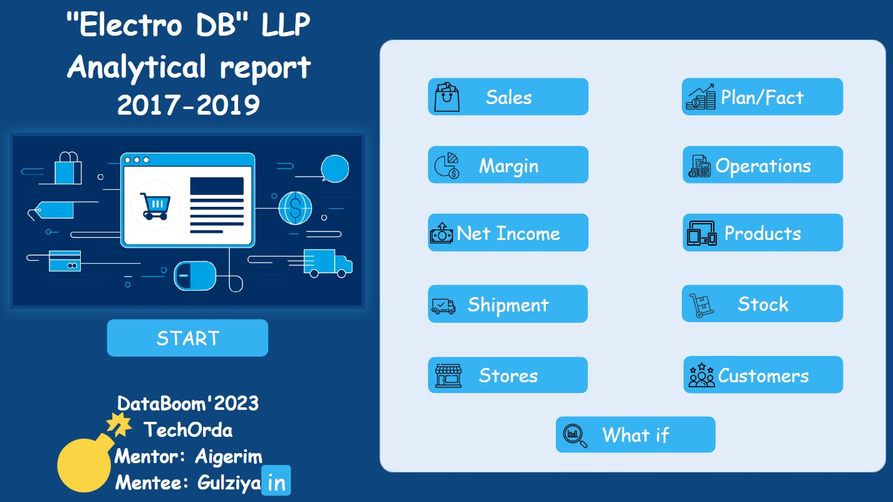
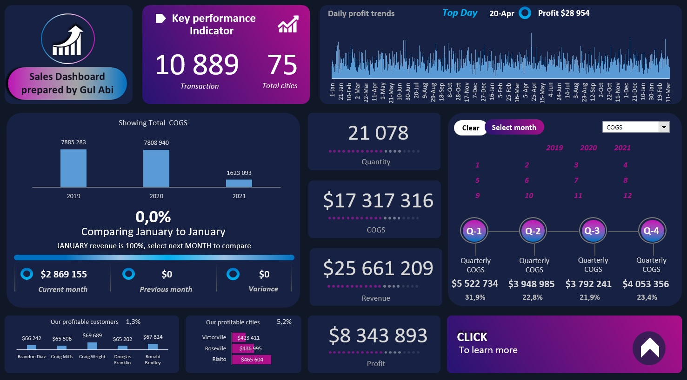
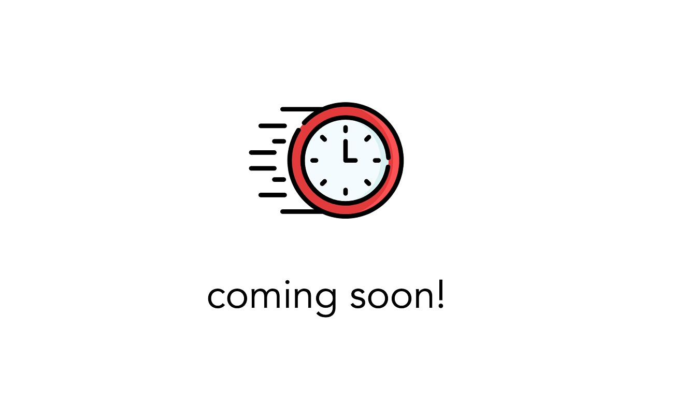

This is my Power BI project. It is a fully interactive report. To explore it further, click the 'View Project' button.
This was my final project in the TechOrda Bootcamp. It may feel a bit overwhelming since we had to demonstrate all the knowledge we learned during the bootcamp.

This is my Excel project. The photo provides an overview of the dashboard. The dashboard itself is fully interactive.
To explore it in detail, you need to download the "excel-project.xlsm" file from my GitHub by clicking the "View Project" button.

A SQL project is in progress and will be added soon. Check back later!
A Python project is in progress and will be added soon. Check back later!